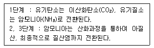
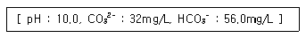
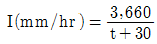
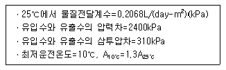
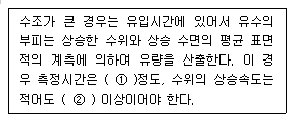

수질환경기사 (2008-05-11 기출문제)
1과목: 수질오염개론
1. 해수의 특성에 관한 설명으로 맞는 것은?
- 염분은 적도해역보다 극해역이 다소 높다.
- 해수의 주요성분 농도비는 수온, 염분의 함수로 수심이 깊어질수록 증가한다.
- 해수의 Na/Ca비는 3～4 정도로 담수보다 매우 높다.
- 해수 내 전체 질소 중 35% 정도는 암모니아성 질소, 유기질소 형태이다.
(정답률: 65%)

2. 자정작용에 대한 설명으로 틀린 것은?
- 물리적 자정작용인 확산작용은 분자확산과 난류확산이 있으며 하천에서는 난류확산이 주를 이룬다.
- 일반적으로 겨울보다는 여름에 자정작용이 크다.
- 자정작용 중 가장 큰 비중을 차지하는 것은 물리적 자정작용이다.
- 생물학적 자정작용은 미생물에 의한 유기물 분해작용과 광합성작용으로 구분할 수 있다.
(정답률: 28%)
3. 수중의 암모늄이온은 암모니아와 평형을 이루고 있다. 이 평형은 pH와 온도에 크게 영향을 받으며 수중에서 다음과 같은 평형을 이룬다. [NH3 + H2O ⇄ NH4+ + OH-] 수온이 25℃이고 25℃에서 NH3 해리상수 Kb는 1.81×10-5, pH는 8.3이라면 NH3의 형태로 몇 %가 존재하는가? (단, KW=1×10-14이고, NH3(%)={[NH3]×100}/{[NH3]+[NH4+]}= {100/(1+Kbㆍ[H+]/Kw))}로 표현됨)
- 9.9
- 19.4
- 22.4
- 33.5
(정답률: 40%)
4. 다음의 조건하에서 3moL의 글리신(glycine, CH2(NH2)COOH)의 이론적 산소요구량은?

- 317 gㆍO2/3molㆍglycine
- 336 gㆍO2/3molㆍglycine
- 362 gㆍO2/3molㆍglycine
- 392 gㆍO2/3molㆍglycine
(정답률: 63%)
5. 에탄올(C2H5OH) 210mg/L가 함유된 폐수의 이론적 COD값은? (단, 기타 오염물질은 고려하지 않음)
- 298 mg/L
- 388 mg/L
- 438 mg/L
- 528 mg/L
(정답률: 29%)
6. Glucose(C6H12O6) 2000mg/L 용액을 호기성 처리시 필요한 이론적인 인(P) 량(mg/L)은? (단, BOD5:N:P=100:5:1, K1=0.1day-1, 상용대수기준, 완전분해 기준, BODu = COD)
- 약 10.6
- 약 12.6
- 약 14.5
- 약 16.8
(정답률: 59%)
7. DO 포화농도가 8mg/L인 하천에서 t=0일 때 DO가 5mg/L이라면 6일 유하했을 때의 DO 부족량은? (단, BODu=10mg/L, K1=0.1/day, K2=0.2/day, 상용대수)
- 약 1.6 mg/L
- 약 2.1 mg/L
- 약 3.2 mg/L
- 약 4.3 mg/L
(정답률: 50%)
8. 탈산소계수가 0.1/day이면 BOD5와 BODu의 비는? (단, BOD5/BODu, 밑수는 상용대수이다.)
- 약 0.69
- 약 0.74
- 약 0.85
- 약 0.91
(정답률: 70%)
9. 적조 발생의 요인이 아닌 것은?
- 수괴의 연직 안정도가 작다.
- 영양염의 공급이 충분하다.
- 해수의 염소량이 저하된다.
- 해저의 산소가 고갈된다.
(정답률: 75%)
10. 어느 하수의 수질을 분석한 결과가 다음과 같다면 총알칼리도(mg/L as CaCO3)는?(오류 신고가 접수된 문제입니다. 반드시 정답과 해설을 확인하시기 바랍니다.)

- 99.2
- 104.2
- 155.2
- 194.2
(정답률: 16%)
11. 20℃에서 BOD8가 100mg/L이었다면 이 시료의 BOD5는? (단, K1(밑이 10)=0.15/일)
- 약 73 mg/L
- 약 76 mg/L
- 약 82 mg/L
- 약 88 mg/L
(정답률: 67%)
12. 특정의 반응물을 포함한 유체가 CFSTR을 통과할 때 반응물의 농도가 100mg/L에서 10mg/L로 감소하였고, 반응기 내의 반응이 일차반응이며 유체의 유량이 1000m3/day이라면, 반응기의 체적(m3)은? (단, 반응속도상수는 0.5day-1)
- 12,000m3
- 15,000m3
- 18,000m3
- 21,000m3
(정답률: 40%)
13. 자당(sucrose, C12H22O11)이 완전히 산화될 때 이론적인 ThOD/ThOC 비는?
- 2.27
- 2.47
- 2.67
- 2.87
(정답률: 45%)
14. 벤젠, 톨루엔, 에틸벤젠, 자일렌이 같은 몰수로 혼합된 용액이 라울트 법칙을 따른다고 가정하면 이 혼합액의 총 증기압(25℃ 기준)은? (단, 벤젠, 톨루엔, 에틸벤젠, 자일렌의 25℃에서 순수 액체의 증기압은 각각 0.126, 0.038, 0.0126, 0.01177atm이며, 기타 조건은 고려하지 않음)
- 0.037 atm
- 0.047 atm
- 0.⑤7 atm
- 0.067 atm
(정답률: 47%)
15. [콜로이드의 침전은 콜로이드 입자의 전하에 반대되는 부호의 전하를 가진 첨가된 전해질 이온에 영향을 받으며, 이 영향은 그 이온이 지니고 있는 전하의 수에 따라 현저하게 증가한다.]는 내용을 가장 잘 설명하고 있는 법칙은?
- Schulze-Hardy 법칙
- Graham 법칙
- Gay-Lussac 법칙
- Raoult's 법칙
(정답률: 알수없음)
16. 다음 수질을 가진 농업용수의 SAR값은? (단, Na+=4600mg/L, PO43-=1500mg/L, Cl-=108mg/L, Ca2+=600mg/L, Mg2+=240mg/L, NH3-N=380mg/L, Na 원자량:23, P 원자량:31, Cl 원자량:35.5, Ca 원자량:40, Mg 원자량:24, N 원자량:14)
- 30
- 40
- 50
- 60
(정답률: 70%)
17. 부영양화를 통제하는 방법과 거리가 먼 것은?
- Ecological Management
- Advanced Treatment
- Stratification
- Algicides
(정답률: 54%)
18. 25℃. 2atm의 압력에 있는 메탄가스 10kg을 저장하는데 필요한 탱크의 부피는? (단, 이상기체의 법칙 적용, R=0.082Lㆍatm/molㆍK(표준상태 기준))
- 4.64 m3
- 5.64 m3
- 6.64 m3
- 7.64 m3
(정답률: 65%)
19. 어느 시료의 대장균수가 5000/mL라면 대장균수가 10/mL가 될 때까지 소요되는 시간은? (단, 일차반응기준, 대장균의 반감기는 2시간)
- 약 14 hr
- 약 18 hr
- 약 22 hr
- 약 26 hr
(정답률: 72%)
20. 합성세제 중 살균능력이 있어 식기세척용 위생 세제나 유아용 세제에 이용되고 있는 것은?
- 음이온성 세제
- 술폰산염성 세제
- 비이온성 세제
- 양이온성 세제
(정답률: 17%)
2과목: 상하수도계획
21. 하수의 배제방식인 분류식에 관한 설명으로 틀린 것은?
- 오수관거와 우수관거와의 2계통을 동일도로에 매설하여 합리적인 관리가 되도록 한다.
- 오수관거에서는 소구경 관거를 매설하므로 시공이 용이하지만 관거의 경사가 급하면 매설깊이가 크게 된다.
- 관거내의 퇴적이 적으나 수세효과는 기대할 수 없다.
- 관거오접의 철저한 감시가 필요하다.
(정답률: 28%)
22. 상수시설인 배수지의 위치와 높이에 관한 설명으로 틀린 것은?
- 자연유하식 배수지의 표고는 최소동수압이 확보되는 높이여야 한다.
- 배수지는 부득이한 경우 외에는 급수지역 중앙에 위치하지 않도록 하여야 한다.
- 급수구역내의 지반 고저가 심할 때는 높은 지구, 낮은 지구 또는 높은 지구, 중간 지구, 낮은 지구의 2~3개 급수구역으로 분할하여 각 구역마다 배수지를 만들거나 감압밸브 또는 가압펌프를 설치한다.
- 배수지는 붕괴의 우려가 있는 비탈의 상부나 하부 가까이는 피해야 한다.
(정답률: 36%)
23. 수도관으로 사용되는 관종 중 경질염화비닐관의 장, 단점으로 틀린 것은?
- 특정 유기용제에 약하며 내면조도의 변화가 발생한다.
- 조인트의 종류에 따라 이형관 보호공을 필요로 한다.
- 저온시에 내충격성이 저하된다.
- 가공성이 좋다.
(정답률: 0%)
24. 하수시설인 맨홀 및 맨홀부속물에 관한 내용 중 틀린 것은?
- 맨홀의 최대설치 간격은 100m 이내로 한다.
- 관거의 기점 및 방향이 변화하는 곳에 설치한다.
- 맨홀부속물인 인버트(invert) 발디딤부는 10～20%의 횡단경사를 둔다.
- 맨홀부속물인 인버트(invert)는 하류관거의 관경 및 경사와 동일하게 한다.
(정답률: 40%)
25. 하수배제방식이 합류식인 경우 중계펌프장이나 처리장 내 펌프장의 계획하수량으로 가장 알맞는 것은?
- 계획시간최대오수량
- 계획우수량
- 강우시 계획오수량
- 계획1일최대오수량
(정답률: 알수없음)
26. 일반적으로 사용되는 하수관거의 형태 중 원형관의 장점이라 볼 수 없는 것은?
- 공장 제품을 사용하므로 이음이 적어져 지하수 침수를 효과적으로 막을 수 있다.
- 역학계산이 간단하다.
- 수리학적으로 유리하다.
- 일반적으로 내경 3000mm정도까지 공장 제품을 사용할 수 있어 공사기간이 단축된다.
(정답률: 31%)
27. 1분당 300m3의 물을 150m 양정(전양정)할 때 최고 효율점에 달하는 펌프가 있다. 이 때의 회전수가 1000rpm이라면 이 펌프의 비속도(비교회전도)는?
- 약 404
- 약 504
- 약 604
- 약 704
(정답률: 63%)
28. 정수시설인 플록 형성지에 대한 설명으로 틀린 것은?
- 플록 형성지는 단락류나 정체부가 생기지 않으면서 충분하게 교반될 수 있는 구조로 한다.
- 플록 형성지는 혼화지와 침전지 사이에 위치하고 침전지에 붙여서 사용한다.
- 플록 형성 시간은 계획 정수량에 대하여 20~40분간을 표준으로 한다.
- 플록형성지의 기계식 교반에서 플록큐레이터의 주변 속도는 5~15cm/sec 범위로 한다.
(정답률: 62%)
29. 하수슬러지 농축조(중력식)에 대한 다음 설명 중 적합치 않은 것은?
- 슬러지 제거기를 설치할 경우 탱크 바닥의 기울기는 5/100 이상이 좋다.
- 고형물부하는 25~70kg/m2일을 표준으로 한다.
- 농축조의 용량은 계획슬러지의 체류시간 3days 이하로 하고 유효수심은 3~4m로 한다.
- 슬러지 제거기를 설치하지 않을 경우 탱크바닥의 중앙에 호퍼를 설치하되 호퍼측벽의 기울기는 수평에 대하여 60° 이상으로 한다.
(정답률: 알수없음)
30. 상수관로에서 조도계수 0.014, 동수경사1/100이고, 관경이 400mm일 때 이 관로의 유량은? (단, 만관 기준, Manning 공식에 의함)
- 약 0.1 m3/sec
- 약 0.2 m3/sec
- 약 0.4 m3/sec
- 약 0.8 m3/sec
(정답률: 29%)
31. 유역면적이 1.5㎢인 지역에서의 우수유출량을 산정하기 위하여 합리식을 사용하였다. 다음과 같은 조건일 때 관거 길이 1000m인 하수관의 우수유출량은? (단, 강우강도

, 유입시간은 6분, 유출계수는 0.7, 관내의 평균 유속은 1.5m/sec이다.)- 12.7 m3/sec
- 15.7 m3/sec
- 19.7 m3/sec
- 22.7 m3/sec
(정답률: 84%)
32. 상수처리시설인 침사지의 구조 기준으로 틀린 것은?
- 표면부하율은 200~500mm/min을 표준으로 한다.
- 지내 평균유속은 30cm/sec를 표준으로 한다.
- 지의 상단높이는 고수위보다 0.6~1m의 여유고를 둔다.
- 지의 유효수심은 3~4m를 표준으로 한다.
(정답률: 67%)
33. 관거별 계획하수량에 관한 설명으로 틀린 것은?
- 오수관거에서는 계획1일 최대오수량으로 한다.
- 우수관거에서는 계획우수량으로 한다.
- 차집관거에서는 우천시 계획오수량으로 한다.
- 지역의 실정에 따라 계획하수량에 여유율을 둘 수 있다.
(정답률: 65%)
34. 하수관거의 유속 및 경사에 대한 설명으로 틀린 것은?
- 오수관거의 유속은 계획시간 최대오수량에 대하여 최소 0.3m/sec, 최대 2m/sec로 한다.
- 유속은 일반적으로 하류방향으로 흐름에 따라 점차로 커지도록 한다.
- 우수관거ㆍ합류관거의 유속은 계획우수량에 대하여 최소 0.8m/sec, 최대 3m/sec로 한다.
- 관거 경사는 일반적으로 하류방향으로 흐름에 따라 점차 작아지도록 한다.
(정답률: 64%)
35. 상수의 송수시설에 관한 설명 중 틀린 것은?
- 송수시설의 계획송수량은 원칙적으로 계획시간최대급수량을 기준으로 한다.
- 송수는 관수로로 하는 것을 원칙으로 하되 개수로로 할 경우에는 터널 또는 수밀성의 암거로 한다.
- 송수시설은 정수장에서 배수지까지 송수하는 시설이다.
- 송수방식은 자연유하식, 펌프가압식 및 병용식이 있다.
(정답률: 50%)
36. 상수처리를 위한 정수시설 중 완속여과지의 수심표준으로 가장 적절한 것은?
- 여과지의 모래면 위의 수심은 30~60cm를 표준으로 한다.
- 여과지의 모래면 위의 수심은 60~90cm를 표준으로 한다.
- 여과지의 모래면 위의 수심은 90~120cm를 표준으로 한다.
- 여과지의 모래면 위의 수심은 120~150cm를 표준으로 한다.
(정답률: 20%)
37. 펌프 흡입구의 유속이 4m/sec이고, 펌프의 토출량은 840m3/hr일 때, 하수 이송에 사용되는 이 펌프의 흡입 구경은?
- 223mm
- 243mm
- 256mm
- 273mm
(정답률: 60%)
38. 상수도시설인 도수시설에 관한 설명으로 틀린 것은?
- 도수시설의 계획도수량은 계획취수량을 기준으로 한다.
- 도수노선은 원칙적으로 공공도로 및 수도용지로 한다.
- 가능한 한 최소동수경사선 이상이 되도록 도수노선을 선정한다.
- 도수시설은 취수시설에서 취수된 원수를 정수시설까지 끌어들이는 시설로 도수관 또는 도수거, 펌프설비 등으로 구성된다.
(정답률: 38%)
39. [소규모하수도는 하나의 하수도 계획구역에서 계획인구가 ( )이하인 하수도를 말한다. 단, 농어촌 마을단위의 하수도 사업은 마을하수도로 구분한다.] ( )안에 알맞는 내용은?
- 약 100명
- 약 1,000명
- 약 10,000명
- 약 100,000명
(정답률: 알수없음)
40. 상수의 취수시설인 심정호의 착정 등에 관한 설명 중 틀린 것은?
- 심정호는 피압대수층으로부터 취수하는 우물이다.
- 굴착방법 중 캐스트 홀(cased hole) 공법은 굴착공의 붕괴를 방지하기 위해 가설케이싱을 지층에 삽입하면서 굴진하는 방법이다.
- 충전자갈은 계산된 투입량 보다 20% 정도 많이 준비한다.
- 심정호 스크린 내로 유입되는 물의 속도를 가능한 빠르게 하기 위해 스크린 개구율을 크게 한다.
(정답률: 10%)
3과목: 수질오염방지기술
41. 비중 1.7, 직경 0.⑤mm인 입자가 침전지에서 침강할 때 침강속도가 0.36m/hr이었다면 비중 2.7, 입경 0.06mm인 입자의 침강속도는? (단, 물의 온도, 점성도 등 조건은 같고, Stoke's 법칙을 따르며, 물의 비중은 1.0이다.)
- 약 1.48 m/hr
- 약 1.26 m/hr
- 약 0.89 m/hr
- 약 0.62 m/hr
(정답률: 34%)
42. 건조된 슬러지 무게의 1/5이 유기물질, 4/5가 무기물질이며 건조 전 슬러지 함수율은 80%, 유기물질 비중은 1.0, 무기물질 비중이 2.5라면 건조 전 슬러지 전체의 비중은?
- 1.091
- 1.106
- 1.121
- 1.143
(정답률: 22%)
43. 다음의 막공법 중 ‘농도차’가 분리를 위한 추진구동력인 것은?
- 역삼투법
- 한외여과법
- 전기투석법
- 투석법
(정답률: 55%)
44. 염소이온 농도가 500mg/L이고, BOD 2,000mg/L인 폐수를 희석하여 활성슬러지법으로 처리한 결과 염소이온 농도와 BOD는 각각 50mg/L이었다. 이 때의 BOD 제거율은? (단, 희석수의 BOD, 염소이온 농도는 0이다.)
- 85%
- 80%
- 75%
- 70%
(정답률: 54%)
45. 하수처리를 위한 회전원판법에 관한 설명으로 틀린 것은?
- 소비전력량은 소규모 처리시설에서는 표준활성슬러지법에 비하여 적다.
- 원판의 회전으로 인해 부착생물과 회전판 사이에 전단력이 생긴다.
- 살수여상과 같이 여상에 파리는 발생하지 않으나 하루살이가 발생하는 수가 있다.
- 활성슬러지법에 비해 이차침전지 SS 유출이 적어 처리수의 투명도가 좋다.
(정답률: 10%)
46. 활성슬러지 공법의 어느 폭기조의 유효용적이 1,000m3, MLSS 농도는 3,000mg/L이고, MLVSS는 MLSS 농도의 75%이다. 유입 하수의 유량은 4,000m3/day이고, 합성계수 Y는 0.63mgㆍMLVSS/mgㆍ제거 BOD, 내생분해계수 k는 0.⑤day-1, 1차 침전조 유출수의 BOD는 200mg/L, 폭기조 유출수의 BOD는 20mg/L일 때, 슬러지 생성량은?
- 301 kg/day
- 321 kg/day
- 341 kg/day
- 361 kg/day
(정답률: 20%)
47. 소화조 슬러지 주입율이 100m3/day이고, 슬러지의 SS 농도가 5%, 소화조 부피가 1,250m3, SS 내 VS 함유율이 85%일 때 소화조에 주입되는 VS의 용적부하(kg/m3ㆍday)는? (단, 슬러지의 비중은 1.0이다.)
- 1.4 kg/m3ㆍday
- 2.4 kg/m3ㆍday
- 3.4 kg/m3ㆍday
- 4.4 kg/m3ㆍday
(정답률: 28%)
48. 역삼투장치로 하루에 800,000L의 3차처리된 유출수를 탈염하고자 한다. 이에 대한 자료가 다음과 같을 때, 요구되는 막 면적은?

- 2624m2
- 2558m2
- 2406m2
- 2352m2
(정답률: 알수없음)
49. 다음 그림은 하수 내 질소, 인을 효과적으로 제거하기 위한 어떤 공법을 나타낸 것인가?(문제 복원 오류로 지문이 없습니다. 정확한 내용을 아신는분 께서는 오류 신고를 통하여 내용 작성 부탁 드립니다. 정답은 3번입니다.)
- VIP process
- A2/O process
- M-Bardenpho process
- phostrip process
(정답률: 59%)
50. 질산화 반응에 의한 알칼리도의 변화는?
- 감소한다.
- 증가한다.
- 변화하지 않는다.
- 증가 후 감소한다.
(정답률: 58%)
51. BOD 200mg/L인 폐수가 1,200m3/day로 포기조에 유입되고 있다. 포기조 부피는 400m3, MLSS 농도는 2,000mg/L이다. F/M 비를 0.2kgㆍBOD/kg∙MLSSㆍday로 유지하자면 MLSS 농도를 어느 정도 증가시켜야 되겠는가?
- 300 mg/L
- 5,000 mg/L
- 800 mg/L
- 1,000 mg/L
(정답률: 40%)
52. 살수여상법에서 최초침전지의 BOD제거율을 35%로 하고, 여상의 BOD부하를 0.6kg/m3∙day, 여상깊이를 1.5m로 할 때 생하수의 BOD가 250ppm이고, 1일 계획처리량이 100m3/day라면 살수여상의 설계 면적은?
- 12m2
- 14m2
- 16m2
- 18m2
(정답률: 28%)
53. 폭기조 내의 MLSS 3,000mg/L, 폭기조 용적이 500m3인 활성 슬러지 처리공법에서 최종 침전지에서 유출하는 SS는 무시할 경우 매일 30m3 슬러지를 배출시키면 세포 평균 체류시간(SRT)은? (단, 배출 슬러지 농도는 1%)
- 3일
- 5일
- 7일
- 10일
(정답률: 28%)
54. SS가 55mg/L이고, 유량이 13,500m3/day인 흐름에서 황산제이철을 응집제로 사용하여 50mg/L로 주입한다. 이 물에 알칼리도가 없을 경우, 매일 첨가해야 할 Ca(OH)2의 양은? [Fe2(SO4)3 + 3Ca(OH)2 → 2Fe(OH)3(8)+ 3CaSO4] (단, Fe=55.8, Ca=40)
- 375 kg/day
- 428 kg/day
- 567 kg/day
- 625 kg/day
(정답률: 43%)
55. 폐수처리장의 완속교반기 동력을 부피 2,000m3인 탱크에서 G값을 50/sec를 적용하여 설계하고자 한다면 이론적으로 소요되는 동력은? (단, 폐수의 점도는 1.139×10-3 N∙s/m2)
- 약 5.7kW
- 약 6.2kW
- 약 7.4kW
- 약 8.5kW
(정답률: 43%)
56. 폐수에 대한 수율계수(Y)가 0.8mg∙VSS/mg∙BOD5로 측정되었다. 이 폐수에 대한 BOD 반응속도상수(탈산소계수)가 0.090day-1(밑수 10)이라면, COD(=BODu) 기준의 수율계수값은? (단, 폐수 내 유기물은 생물학적으로 완전분해가능)
- 0.36 mg∙VSS/mg∙COD
- 0.41 mg∙VSS/mg∙COD
- 0.52 mg∙VSS/mg∙COD
- 0.63 mg∙VSS/mg∙COD
(정답률: 20%)
57. 길이:폭 비가 3:1인 장방형 침전조에 유량 850m3/day의 흐름이 도입된다. 깊이는 4.0m이고, 체류시간은 2.4hr이라면 표면부하율(m3/m2∙day)은? (단, 흐름의 침전조 단면적에 균일하게 분배된다고 가정)
- 20
- 30
- 40
- 50
(정답률: 알수없음)
58. 하수 고도처리를 위한 질산화 공정 중 분리단계 질산화(부유성장식)형태에 관한 설명으로 틀린 것은?
- 안정적 운전 가능
- 독성물질에 대한 질산화 저해 방지 가능
- 운전의 안정성은 이차침전지 운전과 무관
- 단일단계 질산화에 비해 많은 단위 공정 필요
(정답률: 34%)
59. 1차 침전지의 유입 유량은 1000m3/day이고 SS 농도는 220mg/L이다. 1차 침전지에서의 SS 제거효율이 60%일 때 하루에 발생되는 1차 슬러지 부피(m3)는? (단, 슬러지의 비중은 1.03, 함수율은 94%)
- 2.14 m3
- 2.34 m3
- 2.64 m3
- 2.94 m3
(정답률: 39%)
60. 연수화 공정을 거쳐 처리될 물에 대해 필요한 석회의 양과 pH를 높이기 위한 잉여 석회양을 합한 총 석회 요구량은 8.54meq/L이다. 물 500m3당 요구되는 석회(CaO) 양은? (단, 석회(CaO) 순도는 85%, Ca 원자량 40)
- 123 kg
- 141 kg
- 164 kg
- 187 kg
(정답률: 24%)
4과목: 수질오염공정시험기준
61. 투명도 측정에 관한 내용으로 틀린 것은?
- 투명도 판의 지름은 30cm 이다.
- 투명도 판에 뚫린 구멍의 지름은 2cm 이다.
- 투명도 판에는 구멍이 8개 뚫려있다.
- 투명도 판의 무게는 약 3kg 이다.
(정답률: 31%)
62. Io 단색광이 정색액을 통과할 때 그 빛이 50%가 흡수된다면 이 경우 흡광도는?
- 0.6
- 0.5
- 0.3
- 0.2
(정답률: 40%)
63. 총대장균군 실험결과, 검수 1mL, 0.1mL, 0.01mL, 0.001mL 씩을 이식한 각각의 시험관 5개씩 중 양성관수는 5, 5, 2, 0 이었다. 최적확수를 구하기 위한 양성관수의 선택이 맞는 것은?
- 5, 5, 2
- 5, 0, 0
- 5, 2, 0
- 5, 5, 0
(정답률: 17%)
64. 원자흡광광도법에 의한 비소 정량에 관한 설명으로 틀린 것은?
- 염화제일주석으로 시료 중의 비소를 3가 비소로 환원한다.
- 비화수소는 아연을 가하여 발생시킨다.
- 아르곤-수소 연소가스를 사용한다.
- 원자화된 비소는 298.7nm에서 측정한다.
(정답률: 25%)
65. 수질분석을 위한 시료 채취시 유의사항과 가장 거리가 먼 것은?
- 채취용기는 시료를 채우기 전에 맑은 물로 3회 이상 씻은 다음 사용한다.
- 용존가스, 환원성 물질, 휘발성 유기물질 등의 측정을 위한 시료는 운반중 공기와의 접촉이 없도록 가득 채워져야 한다.
- 지하수 시료는 취수정 내에 고여있는 물을 충분히 퍼낸(고여 있는 물의 4~5배 정도이나 pH 및 전기전도도를 연속적으로 측정하여 이 값이 평형을 이룰 때까지로 한다.)다음 새로 나온 물을 채취한다.
- 시료채취량은 시험항목 및 시험횟수에 따라 차이가 있으나 보통 3 ~ 5L 정도이어야 한다.
(정답률: 59%)
66. 흡광광도법으로 시안을 정량할 때 시료에 포함되어 분석에 영향을 미치는 물질과 이를 제거하기 위해 사용되는 시약을 틀리게 연결한 것은?
- 유지류 : 클로로포름
- 황화합물 : 초산아연 용액
- 잔류염소 : 아비산 나트륨용액
- 질산염 : L-아스코르빈산
(정답률: 24%)
67. 수은을 원자흡광광도법(환원기화법)으로 측정하는 경우에 있어서 시료 중 염화물이온이 다량 함유하게 되면 산화조작시 유리염소를 발생하여 수은과 동일한 파장에서 흡광도를 나타내게 되어 측정에 영향을 미친다. 이 물질을 제거하기 위해 사용되는 시약과 추출(통기)물질은?
- 염산히드록실아민, 질소 가스
- 염산히드록실아민, 수소 가스
- 과망간산칼륨, 질소 가스
- 과망간산칼륨, 수소 가스
(정답률: 알수없음)
68. 흡광광도법으로 크롬을 정량할 때에 관한 설명으로 틀린 것은?
- KMnO4로 크롬이온 전체를 6가 크롬으로 산화시킨다.
- 적자색 착화합물의 흡광도를 430nm에서 측정한다.
- 정량범위는 0.002～0.⑤mg이다.
- 6가 크롬을 산성에서 디페닐카르바지드와 반응시킨다.
(정답률: 알수없음)
69. 불소의 란탄-알리자린 콤프렉손법에 의한 측정법으로 틀린 것은?
- 적색의 복합착화합물의 흡광도를 520nm에서 측정하는 방법이다.
- 알루미늄 및 철의 방해가 크나 증류하면 영향이 없다.
- 시료 중 불소함량이 정량범위를 초과할 경우 탈색현상이 나타날 수 있다.
- 유효측정농도는 0.15mg/L 이상으로 한다.
(정답률: 알수없음)
70. 시료의 최대 보존기간이 가장 짧은 측정항목은?
- 염소이온
- 암모니아성 질소
- 시안
- 부유물질
(정답률: 알수없음)
71. 최대유량 1m3/분 이상인 경우, 용기에 의한 유량 측정에 관한 내용이다. ( )안에 맞는 것은?

- ① 1분, ② 매분 1cm
- ① 1분, ② 매분 3cm
- ① 5분, ② 매분 1cm
- ① 5분, ② 매분 3cm
(정답률: 34%)
72. 실험에 관한 일반 사항 중 틀린 것은?
- “정확히 취하여”라 함은 규정한 양의 시료 또는, 시액을 홀피펫으로 눈금까지 취하는 것이다.
- “표준편차율”이라 함은 표준편차를 표본수로 나눈값의 백분율을 의미한다.
- “정량범위”라 함은 본 시험방법에 따라 시험할 경우 표준편차율 10% 이하에서 측정할 수 있는 정량하한, 정량상한의 범위를 말한다.
- “유효측정농도”는 지정된 시험방법에 따라 시험하였을 경우 그 시험방법에 대한 최소 정량 한계를 의미한다.
(정답률: 23%)
73. 폐수 중의 아연을 진콘법으로 정량하는 설명으로 틀린 것은?
- 아연이온이 pH 약 9에서 진콘과 반응하여 생성되는 화합물은 청색의 킬레이트 화합물이다.
- 흡광도를 측정하는 파장은 520nm 이다.
- 표준편차율은 10～3%이다.
- 시료 중에 시안화칼륨과 착화합물을 형성하지 않는 중금속이온이 공존하면 발색할 때 혼탁하여 방해한다.
(정답률: 알수없음)
74. 이온크로마토그래피법에 관한 설명으로 틀린 것은?
- 장치의 구성을 전개부, 분리부, 검출부, 지시부로 나눌 수 있다.
- 물 시료 중 음이온 및 양이온의 정성 및 정량분석에 이용된다.
- 액송펌프는 150~350 kg/cm2 압력에서 사용될 수 있어야 한다.
- 시료주입량은 보통 50~100μL 이다.
(정답률: 알수없음)
75. 다음은 수로에 의한 유량측정방법의 하나인 위어의 위어판에 관한 설명이다. 맞는 것은?
- 위어판의 재료는 2mm 이상의 두께를 갖는 내구성이 강한 철판으로 한다.
- 위어판의 외측의 가장자리는 곡선이어야 하며, 그 귀퉁이는 너무 날카롭지 않도록 둥굴게 줄로 다듬는다.
- 위어판의 내면은 평면이어야 하며, 특히 가장자리로부터 100mm 이내는 될수록 매끄럽게 다듬는다.
- 위어판은 수로의 장축에 수평하도록 하고 말단의 안틀에 누수가 없도록 고정한다.
(정답률: 24%)
76. 공정시험방법상 질산성 질소 측정법이 아닌 것은?
- 이온크로마토그래피법
- 카드뮴 환원법
- 데발다합금 환원증류법
- 자외선 흡광광도법
(정답률: 31%)
77. 흡광광도법으로 페놀류를 정량할 때 4-아미노안티피린과 함께 가하는 시약이름과 그 때 가장 적당한 pH는?
- 초산이나트륨, pH 4
- 페리시안칼륨, pH 4
- 초산이나트륨, pH 10
- 페리시안칼륨, pH 10
(정답률: 24%)
78. 이온전극법에서 격막형 전극을 이용하여 측정하는 이온과 거리가 먼 것은?
- NO2-
- CN-
- NH4+
- K+
(정답률: 20%)
79. 구리 측정(흡광광도법:디에틸디티오카르바민산법)에 관한 설명으로 틀린 것은?
- 시료의 전처리를 하지 않고 직접 시료를 사용하는 경우 시료 중에 시안화합물이 함유되어 있으면 염산 산성으로 하여서 끓여 시안화물을 완전히 분해 제거한 다음 시험한다.
- 비스머스(Bi)가 구리의 양보다 2배 이상 존재할 경우에는 청색을 나타내어 방해한다.
- 추출용매는 초산부틸 대신 사염화탄소, 클로로포름, 벤젠 등을 사용할 수 있다.
- 무수황산나트륨 대신 건조거름종이를 사용하여 여과하여도 된다.
(정답률: 36%)
80. 흡광광도법(인도페놀법)으로 암모니아성 질소를 측정할 때 암모늄 이온이 차아염소산의 공존 아래에서 페놀과 반응하여 생성하는 인도페놀의 색깔과 파장 범위는?
- 적자색, 510nm에서 측정
- 적색, 540nm에서 측정
- 청색, 630nm에서 측정
- 황갈색, 610nm에서 측정
(정답률: 39%)
5과목: 수질환경관계법규
81. 수질 및 수생태계 보전에 관한 법률에 사용하는 용어의 정의로 틀린 것은?
- 공공수역 : 하천, 호소, 항만, 연안해역 그 밖에 공공용에 사용되는 수역과 이에 접속하여 공공용에 사용되는 환경부령이 정하는 수로를 말한다.
- 점오염원 : 관거, 수로 등을 통하여 일정한 지점으로 수질오염물질을 배출하는 환경부령이 정하는 배출원을 말한다.
- 폐수무방류배출시설 : 폐수배출시설에서 발생하는 폐수를 당해 사업장 안에서 수질오염방지시설을 이용하여 처리하거나 동일 배출시설에 재이용하는 등 공공수역으로 배출하지 아니하여 폐수배출시설을 말한다.
- 폐수 : 물에 액체성 또는 고체성의 수질오염물질이 혼입되어 그대로 사용할 수 없는 물을 말한다.
(정답률: 9%)
82. ‘어패류 등 섭취’ 행위제한 권고기준으로 맞는 것은?
- 어폐류 체내 총 수은(Hg): 0.1mg/kg 이상
- 어폐류 체내 총 수은(Hg): 0.3mg/kg 이상
- 어폐류 체내 총 수은(Hg): 0.5mg/kg 이상
- 어폐류 체내 총 수은(Hg): 0.8mg/kg 이상
(정답률: 알수없음)
83. 배출부과금에 관한 설명으로 틀린 것은?
- 배출부과금 산정방법 및 산정기준 등에 관하여 필요사항은 환경부령으로 정한다.
- 폐수무방류배출시설에서 수질오염물질이 공공수역으로 배출되는 경우는 초과배출부과금을 부과한다.
- 배출부과금을 부과할 때에는 배출되는 수질오염물질의 종류를 고려하여야 한다.
- 배출시설(폐수무방류배출시설을 제외)에서 배출되는 폐수 중 수질오염물질이 배출허용기준 이하로 배출되나 방류수 수질기준을 초과하는 경우는 기본배출부과금을 부과한다.
(정답률: 24%)
84. 다음의 수질오염방지시설 중 화학적 처리시설에 해당 되는 것은?
- 침전물 개량시설
- 폭기시설
- 응집시설
- 유수분리시설
(정답률: 60%)
85. 배출시설에 대한 일일기준초과배출량 산정에 적용되는 일일유량은 [측정유량×일일조업시간]이다. 일일유량을 구하기 위한 일일조업시간에 대한 설명으로 맞는 것은?
- 측정하기 전 최근 조업한 30일간의 배출시설 조업시간의 평균치로서 분(min)으로 표시한다.
- 측정하기 전 최근 조업한 30일간의 배출시설 조업시간의 평균치로서 시간(HR)으로 표시한다.
- 측정하기 전 최근 조업한 30일간의 배출시설 조업시간의 최대치로서 분(min)으로 표시한다.
- 측정하기 전 최근 조업한 30일간의 배출시설 조업시간의 최대치로서 시간(HR)으로 표시한다.
(정답률: 50%)
86. 공공수역의 수질 및 수생태계 보전을 위해 환경부장관이 설치, 운영하는 측정망의 종류가 아닌 것은?
- 퇴적물 측정망
- 도심 하천 측정망
- 생물 측정망
- 공공수역 유해물질 측정망
(정답률: 17%)
87. 특정수질오염물질이 아닌 것은?
- 셀레늄과 그 화합물
- 1,4-트리클로로메탄
- 1,1-디클로로에틸렌
- 테트라클로로에틸렌
(정답률: 알수없음)
88. 규정에 의한 등록 또는 변경등록을 하지 아니하고 폐수처리업을 한 자에 대한 벌칙기준은?
- 5년 이하의 징역 또는 3천만원 이하의 벌금
- 3년 이하의 징역 또는 2천만원 이하의 벌금
- 2년 이하의 징역 또는 1천5백만원 이하의 벌금
- 1년 이하의 징역 또는 1천만원 이하의 벌금
(정답률: 알수없음)
89. 기타 수질오염원의 시설에 따른 대상 및 규모 기준으로 틀린 것은?
- 자동차 폐차장 시설: 면적이 1천 5백제곱미터 이상일 것
- 골프장: 면적이 3만 제곱미터 이상이거나 3홀 이상일 것
- 안경점에서 렌즈를 제작하는 시설(하수종말처리시설로 유입, 처리하지 아니하는 경우만 해당됨): 1대 이상일 것
- 사진처리를 위한 무인자동식, 현상, 인화, 정착시설: 폐수발생량 1일 0.1세제곱미터 이상 일 것
(정답률: 17%)
90. 위임업무 보고사항의 업무내용 중 보고횟수가 ‘연 1회’에 해당 되는 것은?
- 폐수무방류배출시설의 설치허가(변경허가) 현황
- 기타 수질오염원 현황
- 환경기술인의 자격별, 업종별 신고상황
- 배출업소의 지도, 점검 및 행정처분 실적
(정답률: 알수없음)
91. 폐수종말처리시설의 방류수 수질기준으로 틀린 것은? (단, 농공단지기준 제외, 현재 시점 적용)
- 부유물질량(SS) : 20mg/L 이하
- 총 질소(T-N) : 40mg/L 이하
- 생물화학적산소요구량(BOD) : 20mg/L 이하
- 총 인(T-P) : 8mg/L 이하
(정답률: 알수없음)
92. 환경부장관이 수질 등의 측정자료를 관리, 분석하기 위하여 측정기기부착사업자 등이 부착한 측정기기와 연결, 그 측정결과를 전산 처리할 수 있는 전산망 운영을 위한 수질원격감시체계 관제센터를 설치 운영할 수 있는 곳은?
- 유역환경청
- 환경관리공단
- 시,도 보건환경연구원
- 국립환경과학원
(정답률: 40%)
93. 수질 및 수생태계 환경기준 중 해역(등급: 참돔, 방어 및 미역 등 수산생물의 서식, 양식 및 해수욕에 적합한 수질)의 기준 항목에 해당되는 것은? (단, 생활환경 기준)
- 용매추출 유분
- 분원성대장균군(대장균군수/100mL)
- 생물화학적산소요구량
- 부유물질량
(정답률: 19%)
94. 수질 및 수생태계 환경기준(호소, 생활환경 기준) 중 ‘보통(Ⅲ)’ 등급에 해당되는 총 인과 총 질소 기준치는?
- 총 인 : 0.02mg/L 이하, 총 질소 : 0.3mg/L 이하
- 총 인 : 0.03mg/L 이하, 총 질소 : 0.4mg/L 이하
- 총 인 : 0.⑤mg/L 이하, 총 질소 : 0.6mg/L 이하
- 총 인 : 0.10mg/L 이하, 총 질소 : 0.8mg/L 이하
(정답률: 0%)
95. 환경부장관 또는 시도지사가 측정망을 설치하기 위한 측정망 설치계획에 포함시켜야 하는 사항과 가장 거리가 먼 것은?
- 측정망 배치도
- 측정망 관리계획
- 측정자료의 확인방법
- 측정망 운영기관
(정답률: 24%)
96. 조사, 측정대상 호소에 대하여 호소의 생성, 조성 연도, 유역면적, 저수량 등 호소를 관리하는 데에 필요한 기초자료는 몇 년마다 조사, 측정하여야 하는가?
- 2년 마다
- 3년 마다
- 5년 마다
- 7년 마다
(정답률: 17%)
97. 오염총량목표수질의 달성 또는 유지의 여부를 확인하기 위한 총량관리 단위유역의 수질 측정방법에 대한 기준으로 맞는 것은?
- 오염총량목표수질이 설정된 지점별로 연간 10회 이상 측정하여야 한다.
- 오염총량목표수질이 설정된 지점별로 연간 20회 이상 측정하여야 한다.
- 오염총량목표수질이 설정된 지점별로 연간 30회 이상 측정하여야 한다.
- 오염총량목표수질이 설정된 지점별로 연간 50회 이상 측정하여야 한다.
(정답률: 36%)
98. 배출부과금을 부과하는 경우, 당해 배출부과금 부과기준일 전 6개월 동안 방류수 수질기준을 초과하는 수질오염물질을 배출하지 아니한 사업자에 대하여 방류수 수질기준을 초과하지 아니하고 수질오염물질을 배출한 기간별 당해 부과 기간에 부과하는 기본배출부과금의 감면율로 맞는 것은?
- 6월 이상 1년 내 : 100분의 10
- 1년 이상 2년 내 : 100분의 30
- 2년 이상 3년 내 : 100분의 50
- 3년 이상 : 100분의 60
(정답률: 54%)
99. 비점오염원관리대책의 시행을 위한 계획에 포함되어야 할 사항과 가장 거리가 먼 것은?
- 방지시설의 설치, 운영 및 불투수층 면적의 축소 등 대상 수질오염물질 저감계획
- 관리 단위 지역별 관리목표 설정 및 유지 계획
- 환경친화적 개발 등의 대상 수질오염물질 발생예방
- 관리지역의 개발현황 및 개발계획
(정답률: 0%)
100. 초과부과금의 산정기준인 오염물질 1킬로그램당 부과금액이 가장 적은 특정유해물질은?
- 페놀류
- 비소 및 그 화합물
- 수은 및 그 화합물
- 유기인 화합물
(정답률: 알수없음)